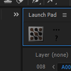
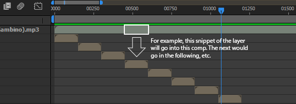

About
I'm putting all my non-GUI scripts in this repository.
Launch Mocha AE
This script is best used in conjunction with a script launcher like "Launch Pad" or "ft-Toolbar." Mocha AE can be annoying to launch. It install with after effects but can only be launched with the "Track with Mocha AE" command in the animation window. Meaning, to get mocha open, a layer needs to be selected. This is fine when going to track a layer, but if you want to open an earlier mocha save file, having this be the only way to get the application open is cumbersome, especially since it can't even be opened by double click on the save files. This script binds the launching of mocha to a single button press (when used with a launcher.)
Split to Precomps
Drag a layer into a comp and split its contents into the precomps beneath it. Requires the layer to be split be at index 1.
Download / Contribute
Visit https://github.com/vidjuheffex/ae.scripts to download the source, fork, contribute and more.